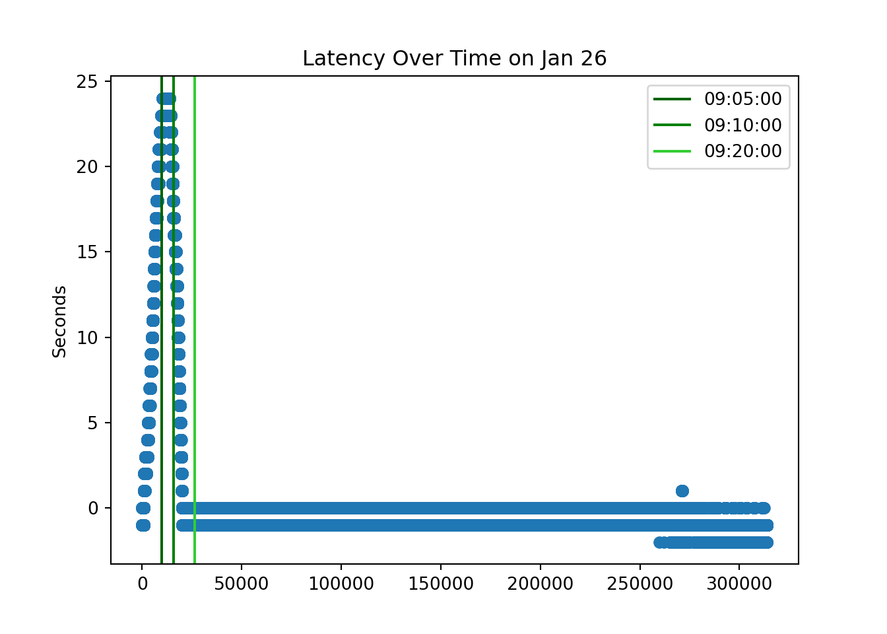
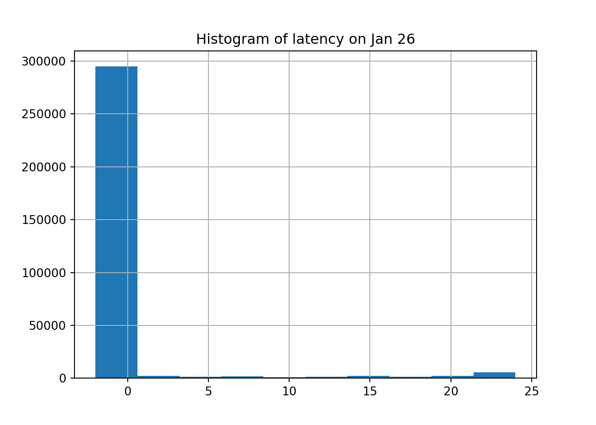

Note: 이 페이지는 키움 API를 통해 Real Time Tick Data를 받아온 후 데이터를 클리닝 하는 과정을 보여주고 있습니다. 오류 및 문의사항은 metrics@kakao.com 으로 메일주시면 감사하겠습니다
데이터 자체에 대한 질문과 데이터 제공에 관한 문의는 000 으로 메일 주시면 감사하겠습니다
R code 블럭과 Python code 블럭은 다음과 같이 색깔로 구분하겠습니다. 결과창은 동일하게 Ivory 색 블럭으로 표시됩니다.
# "이것은 R 코드 입니다."# "이것은 Python 코드 입니다."library(dplyr)
library(tidyverse)
library(DT)
library(reticulate) # Python
#py_install(packages = "matplotlib")
#py_install(packages = "pandas")
#py_install(packages = 'dfply')
options(scipen=999)
options(max.print = 99999999)
options(digits=10)Import Data
Check NA
#wd = "G:/공유 드라이브/Project_TBD/Stock_Data/real_time/kiwoom_stocks/2021-01-14"
wd2 = "/Volumes/GoogleDrive/공유 드라이브/Project_TBD/Stock_Data/real_time/kiwoom_stocks/2021-01-26"
tbl =
list.files(path = wd2, pattern = '.*stocks_trade.*\\.csv')[2:8] %>%
map_df(~readr::read_csv(paste(wd2,.,sep = '/'),
col_names = c('code','trade_date','timestamp','price','open','high','low','size','cum_size','ask1','bid1','rotation','bs_ration', 'mkt_type', 'mkt_cap'),
col_types = cols(.default="d", code = "c")
)
)
sum(is.na(tbl))## [1] 0## code trade_date timestamp ... bs_ration mkt_type mkt_cap
## 0 296710 90000.0000 20210126090000.1055 ... 500.0000 2.0000 69.0000
## 1 296710 90000.0000 20210126090000.1094 ... 500.0000 2.0000 69.0000
## 2 279540 90000.0000 20210126090000.2148 ... 500.0000 2.0000 157.0000
## 3 332930 90000.0000 20210126090000.3008 ... 0.0000 2.0000 1776.0000
## 4 296710 90000.0000 20210126090000.3125 ... 500.0000 2.0000 69.0000
##
## [5 rows x 15 columns]ss = df_py[df_py.code == '005930'].reset_index(drop=True)
ss.shape## (313868, 15)ss = ss[ss['timestamp'].apply(lambda x: int(str(int(x*1000000))[12:14])) < 60 ]
ss = ss.assign( microsecond = ss['timestamp'].apply(lambda x: str(int(x*1000000))[14:20]),
second = ss['timestamp'].apply(lambda x: str(int(x*1000000))[12:14]),
minute = ss['timestamp'].apply(lambda x: str(int(x*1000000))[10:12]),
hour = ss['timestamp'].apply(lambda x: str(int(x*1000000))[8:10]),
day = ss['timestamp'].apply(lambda x: str(int(x*1000000))[6:8]),
month = ss['timestamp'].apply(lambda x: str(int(x*1000000))[4:6]),
year = ss['timestamp'].apply(lambda x: str(int(x*1000000))[0:4]),
kw_time = ss['trade_date'].apply(lambda x: str(int(x))))
ss.head()## code trade_date timestamp price ... day month year kw_time
## 0 005930 90005.0000 20210126090004.5000 88900.0000 ... 26 01 2021 90005
## 1 005930 90005.0000 20210126090004.5977 88900.0000 ... 26 01 2021 90005
## 2 005930 90005.0000 20210126090004.6211 88900.0000 ... 26 01 2021 90005
## 3 005930 90005.0000 20210126090004.7266 88800.0000 ... 26 01 2021 90005
## 4 005930 90005.0000 20210126090004.5000 88800.0000 ... 26 01 2021 90005
##
## [5 rows x 23 columns]ss['lc_time'] = ss.apply(lambda x: datetime(
year = int(x['year']),
month = int(x['month']),
day = int(x['day']),
hour = int(x['hour']),
minute = int(x['minute']),
second = int(x['second']),
microsecond = int(x['microsecond'])), #.strftime("%H:%M:%S.%f")[:-3],
axis=1)ss['lc_time_hms'] = ss.apply(lambda x: x['lc_time'].strftime("%H:%M:%S"),
axis=1)
ss.head(10)## code trade_date ... lc_time lc_time_hms
## 0 005930 90005.0000 ... 2021-01-26 09:00:04.500480 09:00:04
## 1 005930 90005.0000 ... 2021-01-26 09:00:04.598784 09:00:04
## 2 005930 90005.0000 ... 2021-01-26 09:00:04.619264 09:00:04
## 3 005930 90005.0000 ... 2021-01-26 09:00:04.725760 09:00:04
## 4 005930 90005.0000 ... 2021-01-26 09:00:04.500480 09:00:04
## 5 005930 90005.0000 ... 2021-01-26 09:00:04.520960 09:00:04
## 6 005930 90005.0000 ... 2021-01-26 09:00:04.525056 09:00:04
## 7 005930 90005.0000 ... 2021-01-26 09:00:04.549632 09:00:04
## 8 005930 90005.0000 ... 2021-01-26 09:00:04.549632 09:00:04
## 9 005930 90005.0000 ... 2021-01-26 09:00:04.647936 09:00:04
##
## [10 rows x 25 columns]ss['kw_time'].apply(lambda x: x[0:2]).value_counts()## 14 55455
## 10 48560
## 13 47764
## 11 38888
## 12 38692
## 15 24986
## 90 15745
## 91 10666
## 92 10516
## 93 8397
## 94 7452
## 95 6737
## Name: kw_time, dtype: int64ss['kw_time'] = ss.kw_time.apply(lambda x: '0' + x if ((x[0]=='8') | (x[0]=='9')) else x)
ss['kw_time'].apply(lambda x: x[0:2]).value_counts()## 09 59513
## 14 55455
## 10 48560
## 13 47764
## 11 38888
## 12 38692
## 15 24986
## Name: kw_time, dtype: int64ss['kw_time'] = ss.apply(lambda x: datetime(year = int(x['year']),
month = int(x['month']),
day = int(x['day']),
hour = int(x['kw_time'][0:2]),
minute = int(x['kw_time'][2:4]),
second = int(x['kw_time'][4:6])),
axis = 1
)
ss['kw_time_hms']= ss.apply(lambda x: x['kw_time'].strftime("%H:%M:%S"),
axis=1)ss['latency'] = (pd.to_datetime(ss['lc_time_hms']) - pd.to_datetime(ss['kw_time_hms'])).dt.total_seconds()ss.latency## 0 -1.0000
## 1 -1.0000
## 2 -1.0000
## 3 -1.0000
## 4 -1.0000
## ...
## 313863 -1.0000
## 313864 -1.0000
## 313865 -1.0000
## 313866 -2.0000
## 313867 -1.0000
## Name: latency, Length: 313858, dtype: float64# x coordinates for the lines
xcoords = [ ss.index[ss['kw_time_hms'] == '09:05:00'][0],
ss.index[ss['kw_time_hms'] == '09:10:00'][0],
ss.index[ss['kw_time_hms'] == '09:20:00'][0] ]
# colors for the lines
colors = ['darkgreen','green','limegreen']
time = ['09:05:00','09:10:00','09:20:00']
plt.scatter(ss.reset_index().index, ss.latency)
for xc,c,time in zip(xcoords,colors,time):
plt.axvline(x=xc, label='{}'.format(time), c=c)
plt.legend()
plt.title('Latency Over Time on Jan 26')
plt.ylabel('Seconds')
ss.latency.hist()
plt.title('Histogram of latency on Jan 26')